Refreshed: 15 June 2026
YSN 2025
うごく かさなる “きもの”になる
2025/10/1〜12
Gallery SUGATA
［いっしょにうごく｜Sync］
カラダが動くと、シワが生まれる：着物のかさなりを「歩く」から考える
BASSDRUM(池田航成、小川恭平、毛原大樹）
協力：安藤隆一郎(京都市立芸術大学）
［くらべる｜With Variety］
「世の中と着物とあなた」のイロイロ：正しい着物の着方ってあるの？
服部和子きもの学院
小形道正(大妻女子大学）
［かさなる｜Overlap］
パンッ、シュッ、ザザ。：着付けのまわりの音を集める
岡本太玖斗
撮影協力：武田真彦(サウンドデザイン）、服部青海(着付けサポート）
［ととのえる｜How to Place］
(“きもの”の）しまいかた
福井裕孝
参加者：伊藤千鶴、黒沼雄太、つくだはるか、はしもとさゆり、吉兼杏奈(ワークショップのみ）／
撮影：山口梓沙(写真）、宮澤響(映像）
YSN Studio
ディレクション：須田伸一／アートディレクション・デザイン：米山菜津子／
空間設計：Siin Siin／什器制作：SCHEME CO., LTD.／
編集：わかめかのこ(さりげなく）／プロジェクトマネージメント：原田ふくみ／
記録撮影：吉川周作／WEBデザイン・開発：島影南美／
責任編集：矢代真也(矢代仁）


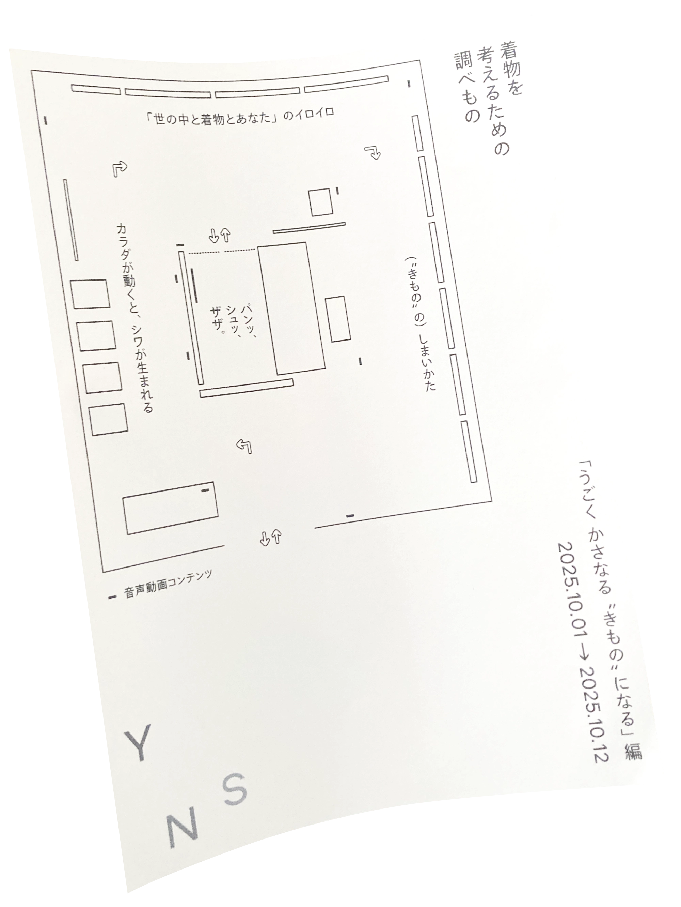
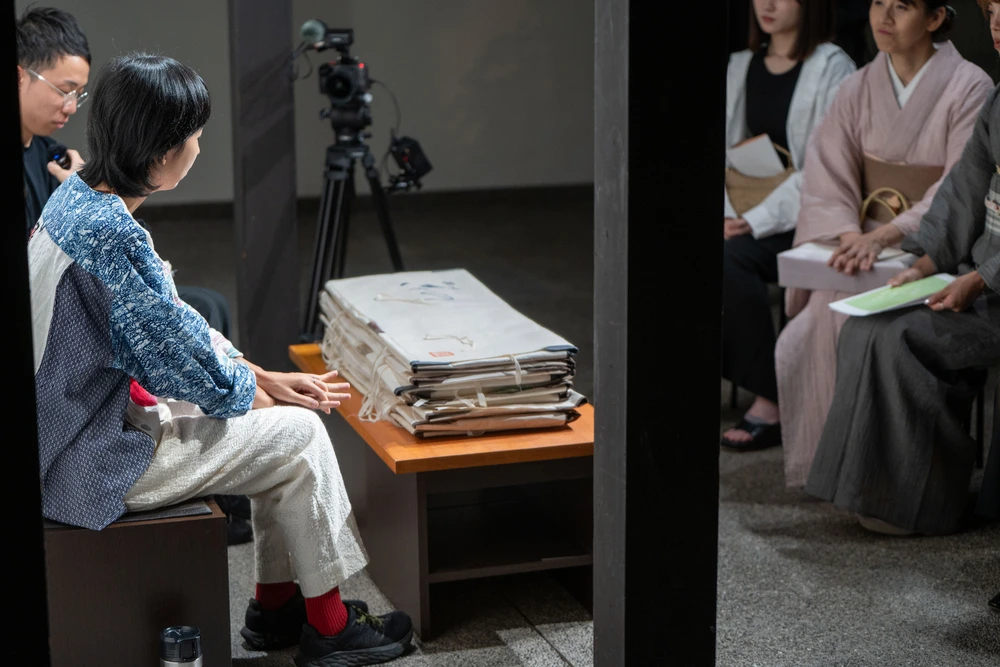
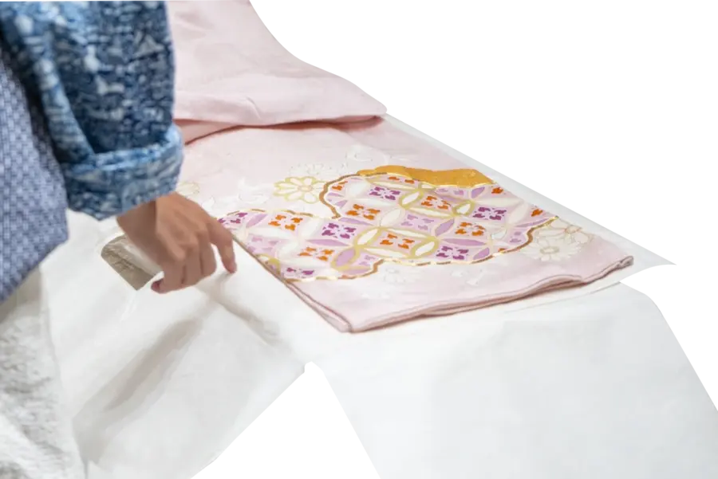
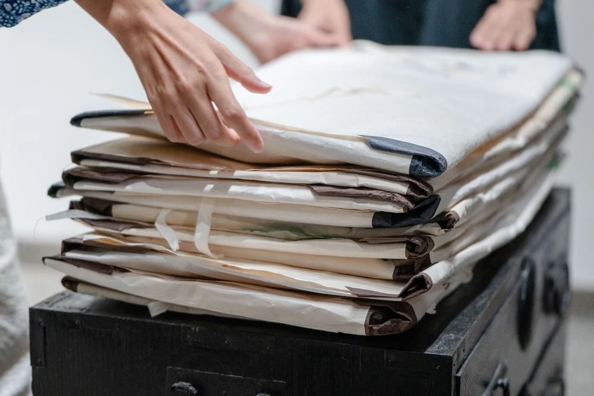
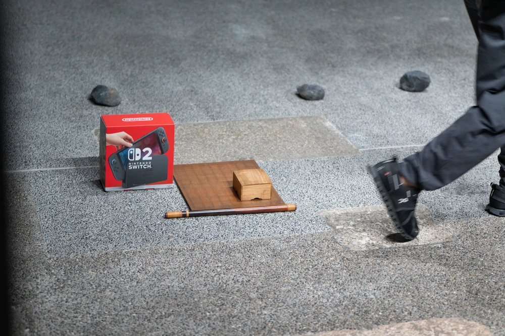
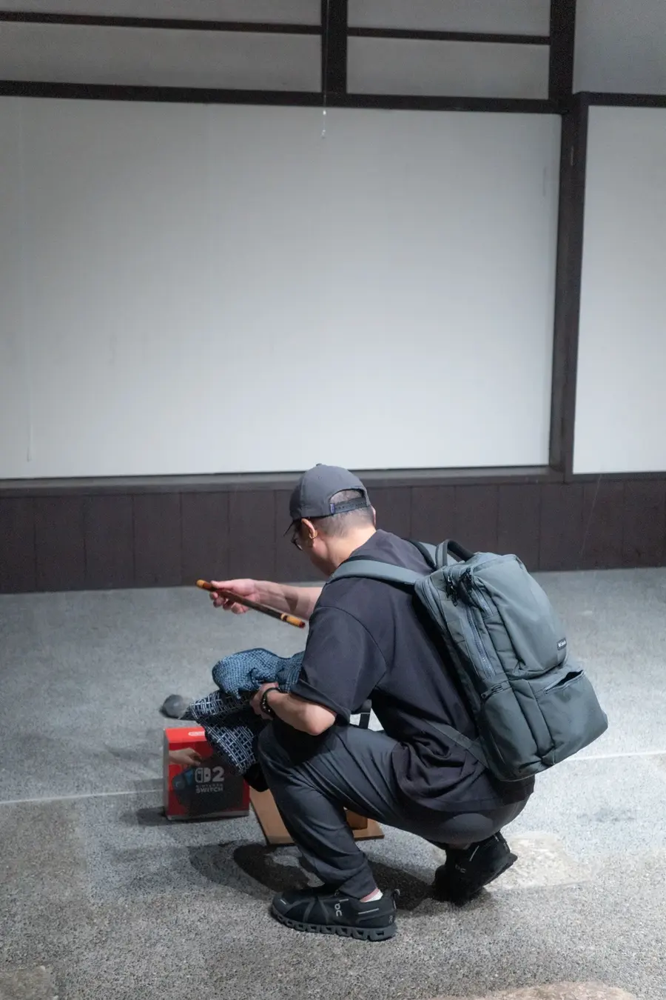
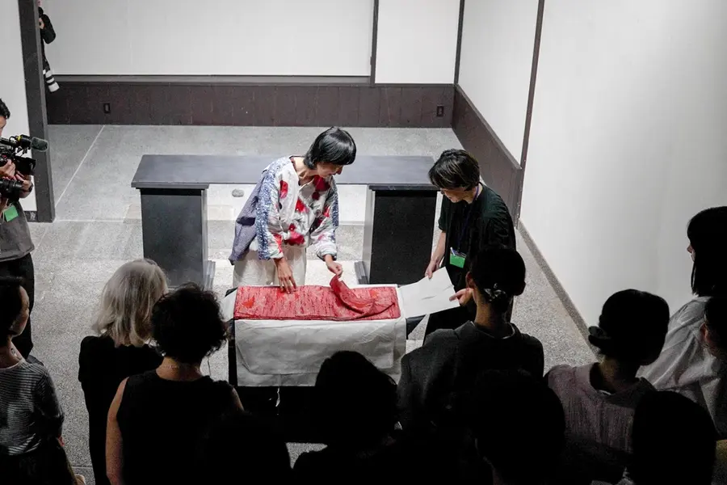
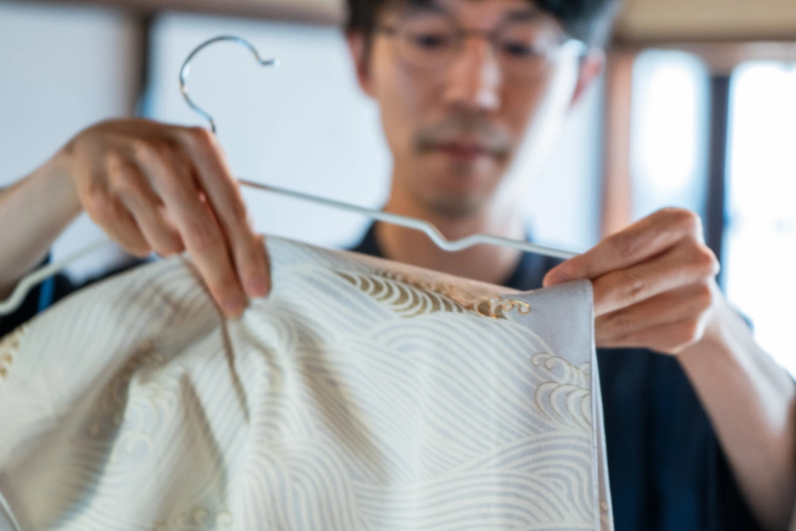
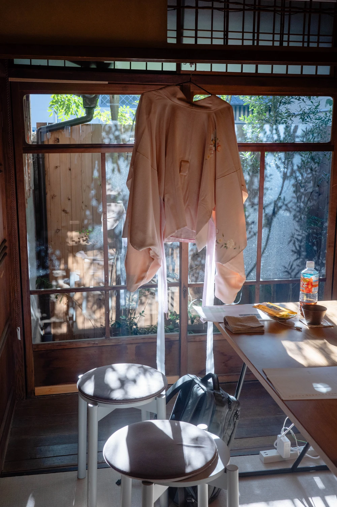
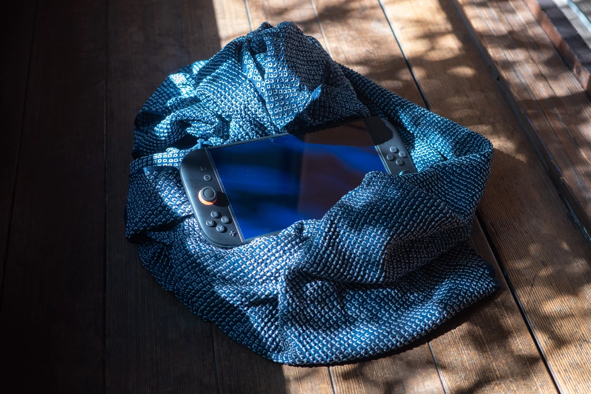
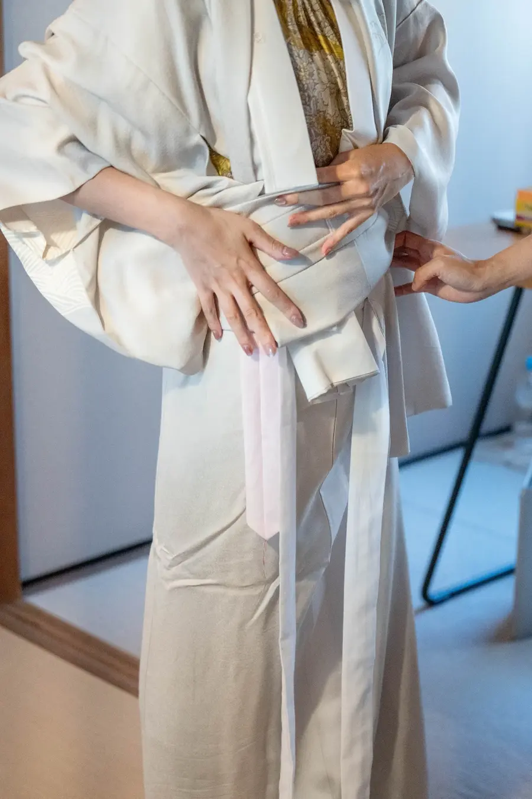
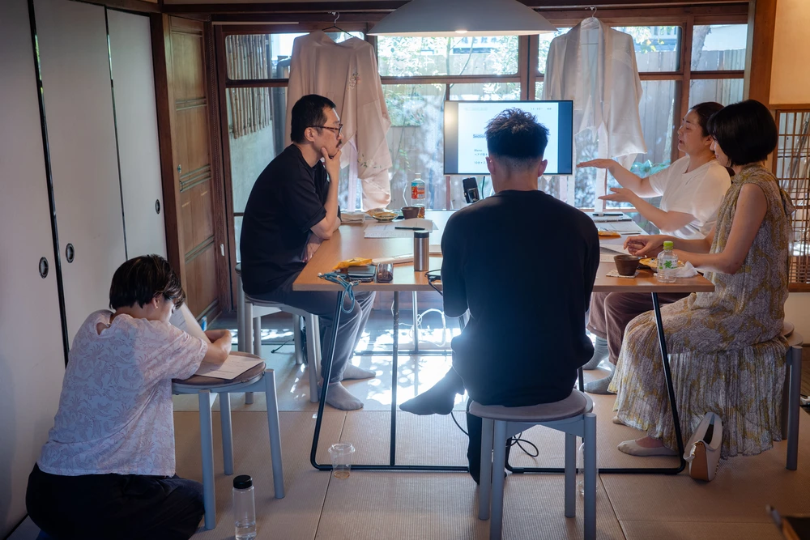


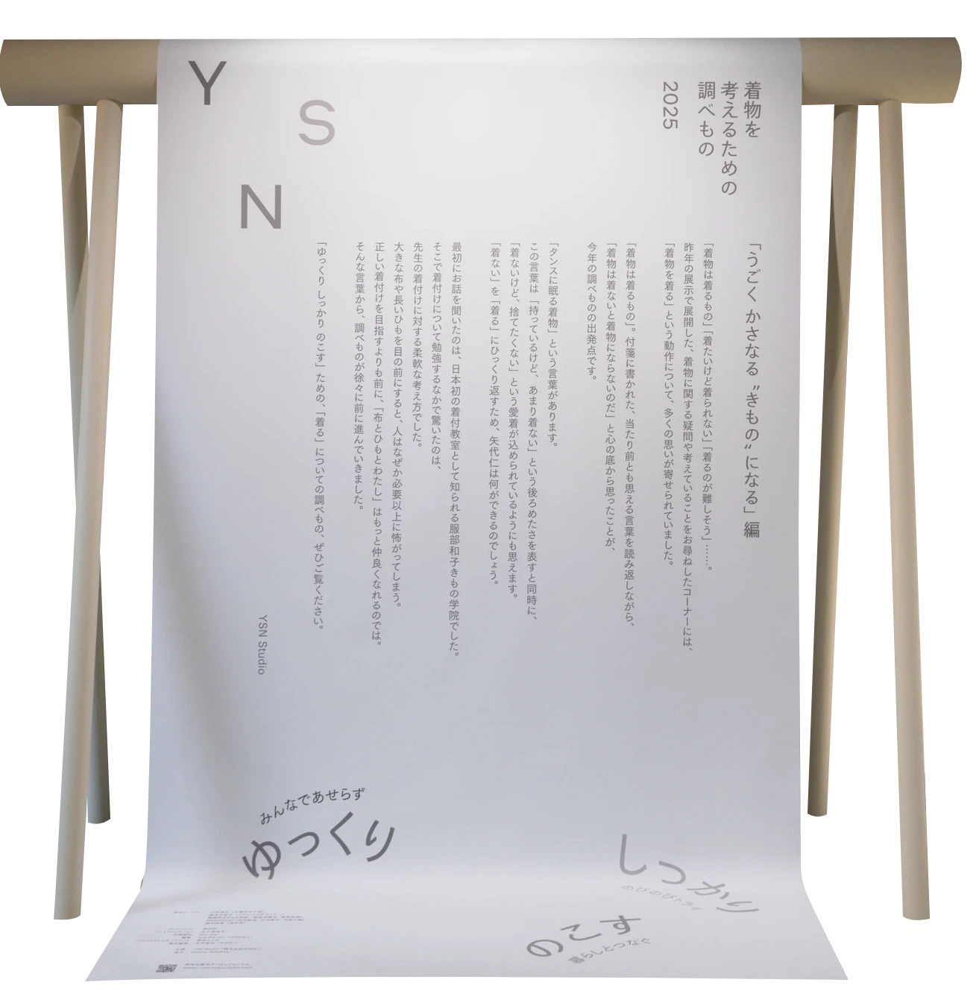